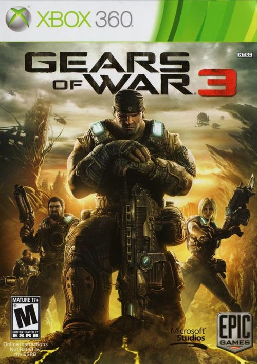
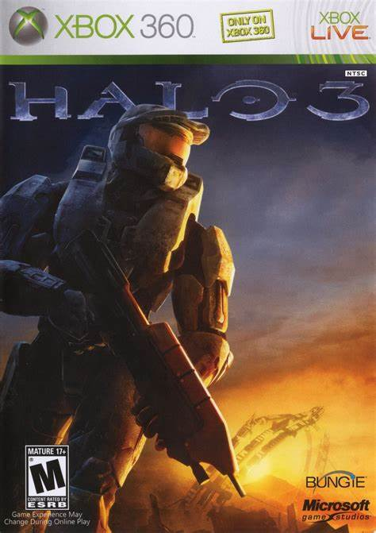
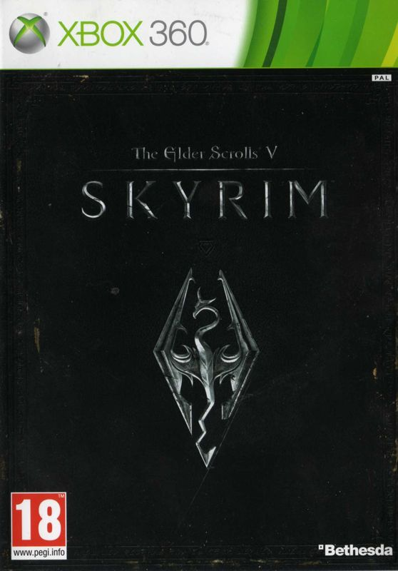
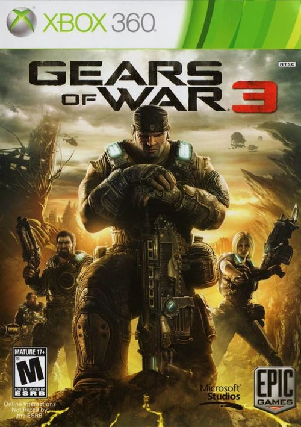
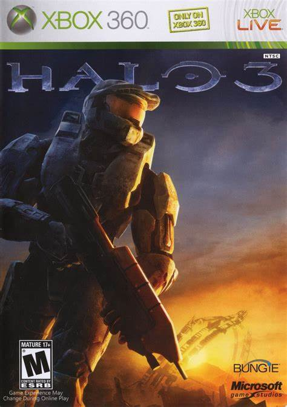
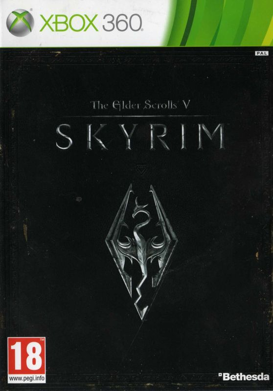

|  |  |  |
 |

O Xbox 360 foi desenvolvido pela Microsoft como o sucessor do Xbox original. Ele faz parte da sétima geração de consoles e competiu com o PlayStation 3 da Sony e o Wii da Nintendo.
O Kinect, lançado em novembro de 2010, é um sensor de movimentos que revolucionou a forma de interação com jogos e aplicativos. Ele utiliza câmeras RGB, projetores infravermelhos e detectores que mapeiam o ambiente em três dimensões, permitindo o reconhecimento de gestos e voz em tempo real.
O Xbox 360 teve uma biblioteca impressionante de jogos exclusivos. Alguns dos mais notáveis incluem:
|  |  | |
 |
O Xbox 360 vendeu mais de 85,8 milhões de unidades em todo o mundo. Sua biblioteca de jogos e a experiência online através da Xbox Live deixaram uma marca duradoura na indústria dos videogames.
Em resumo, o Xbox 360 foi um console que trouxe inovações, jogos memoráveis e uma comunidade de jogadores apaixonada. Sua história continua a influenciar a forma como jogamos até hoje.
Comercial do xbox 360 da época: